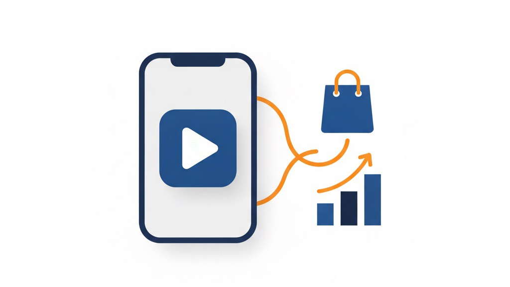

TikTok Shopは「動画で売れる」だけじゃない ― 始めた経緯と、回す仕組みの実際
ネット通販・新しい販路の運用 ／ 集客・見える化 ／ 読了目安：約14分
「TikTokでバズれば（一気に拡散して大きく伸びれば）売れる」。私も最初はそう思ってました。半分は本当で、半分は違いました。大きく伸びるのは入口にすぎず、売上として回り続けるかは“仕組み”で決まります。
この記事では、うちが実際にTikTok Shopを運用して分かった「なぜ始めたのか」「どういう構造で回ってるのか」、そして見落としがちなショップ評価スコア（SPS。お店の運営品質を点数にしたもの）の重要性と初期の販売数量がなぜ効くのかを、実務の目線で書きます。
※ この記事は、当社の自社ブランドCOLLEGRANCE（コレグランス）のTikTok Shopでの経験に基づきます。売上や利益などの具体的な数値は伏せ、仕組みと学びに絞ってお伝えします。TikTok側の決まりごと（点数の基準など）は時期や地域で変わる可能性があるため、最新は公式情報をご確認ください。
1. なぜTikTok Shopを始めたのか
きっかけは、すでにAmazonなどで売っていた商材を「もっと“出会ってもらえる”場所」に置きたかったことです。扱っていたのは、海外の人気高級ブランドの香水を「通常サイズの1本は高くて手が出ない／買って失敗したくない」という人向けに、少量のお試しサイズで届ける商品。つまり「憧れ × 気軽さ」のすき間を突く商材でした。
この「憧れているけど一歩踏み出せない」という気持ちは、検索（Amazon）では出てきません。検索する人は、もう買うものが決まってる人やからです。一方、TikTokのショート動画は「探していなかったけど、見たら欲しくなる」需要を作れる。しかも動画からそのまま購入に飛べる導線（カゴマーク）がある。既存の商材を、まったく別の“出会い方”をする売り場に広げる——これがTikTok Shopを始めた理由です。
実際、商品の世界観をうまく見せた動画は大きく伸び、累計で数千万回規模で再生された動画も生まれました。「検索では掘り起こせない需要を、動画で作る」——この手応えが、本格運用への後押しになりました。
2. どういう仕組みで「回る」のか
TikTok Shopの基本の形は単純です。ただ、Amazonとは「誰が売り場を作るか」がまったく違いました。ここが最初いちばん戸惑ったところです。
① 動画（クリエイター＝商品を紹介する動画を作って投稿する人、または自社）が需要を“作る”
商品の世界観や使いどころをショート動画で見せ、「欲しい」を喚起する。検索と違い、ここで初めて出会ってもらう。
▼
② 動画から、その場で購入に飛ぶ
動画に付いた商品リンクから、TikTok内のショップで完結。離脱が少なく、衝動が冷めないうちに買える。
▼
③ 売れた実績が、次の露出と信頼を呼ぶ
売れるほどお店の評価が上がり、優遇の枠が使えるようになって、さらに売れやすくなる（詳しくは第5章）。
Amazonでは「自社が広告を出して売り場を作る」のが基本ですけど、TikTok Shopでは大勢のクリエイターに動画を作ってもらい、彼らが売り場（＝動画）を量産してくれる。だから「いかにクリエイターに扱ってもらうか」が運用の中心になります。

3. クリエイターは「お願い」では動かない
クリエイターに商品を扱ってもらうには、頼み込むんじゃなくて「彼らが得をする設計」を先に用意するしかありませんでした。うちが整えたのは、ざっくりこの4点です。
| クリエイター側のメリット | こちらが用意したこと |
|---|---|
| 売れたら報酬が入る | 売れた分だけ支払う紹介報酬をしっかり設定 |
| 在庫を抱えずに試せる | 撮影用の見本品を無償で提供 |
| 動画が伸びやすい | 人気ブランド名という、おすすめに乗りやすい“素材” |
| 大きく伸びればフォロワーが増える | 買う気のある視聴者が集まるテーマの設計 |
いちばん効いたのは「人気ブランド名」という、おすすめ表示に乗りやすい強い素材を渡せることでした。クリエイターにとって「伸びる動画が作りやすい商品」は、それ自体が扱う理由になります。報酬・見本品・伸びやすさ・フォロワー増——この4つが揃って初めて、向こうから動いてくれました。
4. 伸びる動画の「型」：黄金の4段階
伸びる動画は、センスより構成（型）で再現できると思ってます。うちが整理したのは、20〜30秒に収める4段階です。
第1段階 共感で引き込む（0〜2秒）
冒頭に大きな文字で悩みを出す。「高くて買えない」「失敗したくない」など、最初の2秒で“自分ごと”にさせる。
第2段階 権威・憧れ（3〜10秒）
ブランドの世界観や実店舗の雰囲気で「憧れ」を刺激する。欲しい気持ちを最大化する。
第3段階 解決策（11〜20秒）
「お試しサイズなら気軽に試せる」と、踏み出せなかった不安を解く具体策を提示。
第4段階 購入への案内（21〜30秒）
最後にお店へ誘導。気持ちが温まったその場で買える状態にする。
「共感 → 憧れ → 解決 → 購入」。この順番さえ外さなければ、個人のセンスに頼らんでも一定の質に乗ります。型をクリエイターと共有したことが、数を作るための土台になりました。
5. 見落とされがちな主役：ショップ評価スコア（SPS）
ここからが、始める前は存在すら知らんかった——けどいちばん効いた話です。笑 TikTok Shopには、お店の状態を点数にした評価スコア（SPS）があります。配送や対応の質などで決まるこの点数が、売れ方を大きく左右します。
なぜかというと、点数が一定の水準を超えると「TikTok側が費用を負担する強力な割引（初めて買う人向けの大幅な値引きなど）」が使えるようになるからです。自社の利益を削らずに「初めての人が買いやすい価格」を出せる。この枠を使えるかどうかで、伸び方がまるで違いました。
| 点数の仕組み（一般的な目安） | 意味すること |
|---|---|
| 一定件数の配送完了で 点数が付き始める | 最初の数十件をさばくまでは、そもそも評価が始まらない |
| 開店したばかりのお店には 最低限の点数が保護として与えられる | 始めた直後は守られるが、実績で上書きされていく |
| 点数が高いと TikTok負担の割引枠が使える | 利益を削らずに「買いやすい価格」を打てる |
広告で殴り合うAmazonの感覚で入ると、この「点数が優遇を呼び込む」構造を見落とします。私も見落としてました。TikTok Shopでは、配送や注文取り消しの少なさといった“地味な運用の質”が、そのまま販売促進の武器（割引枠）に化ける。点数を守るのは、守りやなくて攻めの一手やと思ってます。
6. なぜ「初期の販売数量」がここまで効くのか
前章と地続きで、もうひとつ効くのが初速＝最初の販売数量です。理由は3つあります。
① 評価スコアの“スイッチ”が入る
点数が付き始めるきっかけは「一定件数の配送完了」。最初の数十件を積めないと、TikTok負担の割引などの優遇が使えない。
② おすすめに載る流れに乗れる
早い段階で売れた商品・動画は、TikTokが表示順を決める仕組み（アルゴリズム）に拾われ、おすすめに乗りやすくなる。初速がそのまま表示される量の差に変わる。
③ クリエイターが「扱う理由」になる
すでに売れている商品はクリエイターも安心して扱える。初速は次の動画を呼ぶ。
だからうちは、立ち上げ初期に「最初の数十件をどう作るか」を“運任せ”にせず、先に決めました。既存のお客様やメールでのお知らせなど、最初に知らせる先をあらかじめ用意しておく。地味な話ですけど、このスイッチが入るまでの最初の山を越えられるかどうかで、その後の伸びが変わりました。
売上は、伸びた一部の商品・動画に大きく偏ります。だからこそ「初速で“当たり”を1つ作れるか」で全体が変わる。最初から薄く広げるより、1点に初速を集中させてスイッチを入れるほうが、結果的に早く回り始めました。
7. 運用して分かったこと（薄利・自動化・つまずき）
薄利だからこそ「他人のお金で割引する」
手数料・送料・割引・広告が乗ると、利益はごっそり薄くなります。だからTikTokが費用を負担してくれる割引枠や、新規向けに配られる広告費の無料枠を取りにいく。自社のお金を削らずに攻める形にできるかが、利幅の薄い販路では効きました。
繰り返す作業は小さなプログラムで自動化
商品情報の更新・クーポンやセールの設定・売上データの会計仕訳への変換などは、API（他社のサービスとデータをやり取りする窓口）を使って、手作業をやめてプログラムに寄せました。運用の手間を減らして、人は“伸ばす打ち手”に集中する。ここは他の販路と同じ考え方です。
管理画面が“素直に動かない”という現実
TikTok Shopの管理画面は変わった作りで、一般的な自動入力が効かない場面がありました。ここはだいぶ時間を溶かしました。笑 こうした泥臭い実務の壁は、実際にやってみるまで見えません。教科書どおりには進まへん、というのも学びでした。
8. 他の販路にも効く学び
TikTok Shopの話ですけど、考え方は新しい販路に挑むときならだいたい効くと思ってます。型にしてみます。
「憧れ × 気軽さ」のすき間は広まりやすい
高い・憧れる商材を「お試し／少量」の形に組み直すと、動画で需要を作りやすい。
大きく伸びる動画は「型」で再現する
共感→憧れ→解決→購入。個人の勘に頼らず、構成として共有できる形にする。
人に動いてもらうなら「相手の得」を設計する
動画を作る人は頼みごとでは動かない。報酬・素材・伸びやすさをこちらが用意する。
出品先の「評価点数と初速」を先に読む
優遇の枠が使えるようになる条件を最初に把握し、初期の販売数量を“設計”しておく。
利幅の薄い販路は「他人のお金」を取りにいく
出品先が負担してくれる割引や広告費の無料枠を使い、自社の利幅を守りながら攻める。
「新しい販路、何から手をつければ？」と迷ったとき
TikTok Shopに限らず、新しい販路は「とりあえず始める」だと続きませんでした。その場の“勝ち方の構造”（評価点数・初速・誰が売り場を作るか）を先に読んで、自社の商材をどう乗せるかから一緒に組み立てます。
同じところで迷ってる人がいたら、「その販路はどうやったら勝てる場所なのか」を読むところから話しましょう。